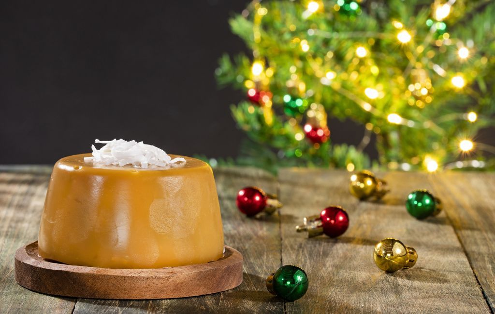
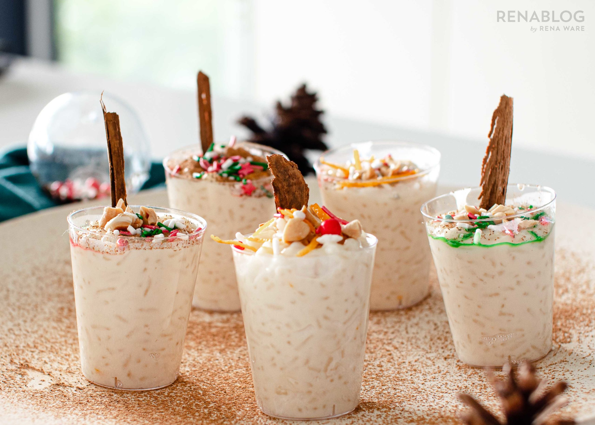

Sencillas y deliciosas comidas navideñas
Buñuelos
Diciembre colombiano nunca será igual si no tenemos natilla y buñuelos para disfrutar. La idea es que la experiencia de cocinar estas recetas, se agradable y sea un momento de compartir en familia.
Ingredientes
* ¾ tazas de maicena o fécula de maíz.
* ¼ taza de harina de yuca
* ½ taza de queso costeño
* 1 taza de queso campesino
* 2 huevos
* Azúcar
* Sal
* Leche
* Polvo de hornear
* Aceite vegetal para freír
Poner todos los ingredientes en un tazón grande que permita mezclar y amasar con la mano: Los quesos, la harina de yuca, la fécula de maíz, dos huevos, una cucharada de azúcar, una pizca de sal, una pizca de polvo para hornear y una cucharada de leche.
Mezcla con la mano hasta obtener una masa uniforme y sin grumos y luego arma bolitas bien redondas con tus manos, del tamaño deseado.
En una olla profunda, debes poner aceite vegetal de cantidad suficiente para que las bolitas de la mezcla puedan flotar sin que se peguen unas con otras.
Cuando el aceite esté bien caliente, incorporar las bolitas con cuidado, una por una y vigilar que no se exploten o quemen.
De ser necesario, bajar un poco la temperatura del aceite si se observa que se están dorando muy rápido. El secreto es que los buñuelos queden dorados y crujientes por fuera y suaves por dentro.
Cuando tomen un color dorado apetecible, retíralos del aceite y ponlos sobre toallas de cocina absorbente. Un toque navideño puede ser espolvorear azúcar impalpable o glas con ayuda de un colador, sobre los buñuelos. Buen provecho.
Natilla

Entendemos que una de las lecciones que nos ha dejado este 2020 es hacer todo lo más práctico posible y podríamos sugerirte que compres una caja de cualquier marca de natilla y te guíes de sus instrucciones, pero no.
La invitación es que le pongas tu toque personal a las recetas y tu familia note la dedicación y amor en las preparaciones. Así que, presta atención a esta natilla casera.
Ingredientes:
* 2 litros de leche
* 2 tazas de fécula de maíz o maicena
* Media libra de panela raspada
* 5 astillas de canela
* 2 cucharadas de mantequilla
* Medio coco fresco y rallado – opcional
* Uvas pasas - opcional
* Media libra de moras frescas – opcional para el dulce
* Un limón
En una olla grande, pon litro y medio de leche con las astillas de canela sobre fuego medio. Cuando empiece la ebullición, retira con una cuchara de palo la espuma que se va formando. Pon el fuego en bajo para que siga hirviendo suavemente.
En el medio litro de leche que quedó, disuelve la fécula de maíz y luego incorporas esta mezcla en la leche que está hirviendo con la canela.
Adiciona la mantequilla y la panela rallada. Mezcla constantemente con la cuchara de palo por varios minutos mientras sigue hirviendo en fuego bajo. Sigue moviendo la mezcla hasta que esté espesa. En ese punto puedes agregar los ingredientes opcionales como uvas pasas y coco rallado.
Luego sirve en moldes individuales y deja enfriar.
Si deseas acompañarlo con dulce de mora, es muy fácil de preparar. Lava muy bien las moras y las pones en una sartén antiadherente con un pocillo agua y dos cucharadas de azúcar. Deja que empiece a hervir esto y bajas el fuego. Vas mezclando suavemente las moras, pones unas gotas de limón y cuando las frutas estén disueltas en una mezcla brillante y espesa, ya está lista.
Cuando la natilla esté fría, puedes regar sobre ella una cucharada del dulce de mora y a degustar.
Arroz con leche

El arroz con leche también ha acompañado a las familias colombianas y es otra opción para aquellos que no gustan de la natilla. Es un postre fácil de hacer y muy tradicional.
Ingredientes:
* Una taza de arroz
* 2 astillas de canela
* Agua
* Leche
* ¼ Crema de leche
* 1 Lata pequeña de leche condensada
* Uvas pasas
* Canela en polvo
En una olla grande, poner a fuego medio el agua, las astillas de canela y el arroz. Dejar hervir durante 20 minutos o hasta que el arroz haya absorbido la mayor parte del agua. Debes verificar que los granos de arroz ya no estén duros.
Luego, adiciona la leche y con una cuchara de palo empieza a mover constantemente. Luego de unos minutos, incorpora la leche condensada y sigue mezclando hasta que el arroz tome una consistencia muy suave.
Finalmente, y sin dejar de mover con la cuchara de palo, añade la crema de leche y deja que hierva por cinco minutos más sin dejar de mezclar.
Cuando todo esté bien mezclado y suave, puedes adicionar las uvas pasas. Retira la olla del fuego y deja reposar un poco. El arroz estará listo para servir con un poco de canela en polvo encima.
Déjanos saber si te animaste a cocinar alguna de estas recetas y cómo te fue.
IR ARRIBA